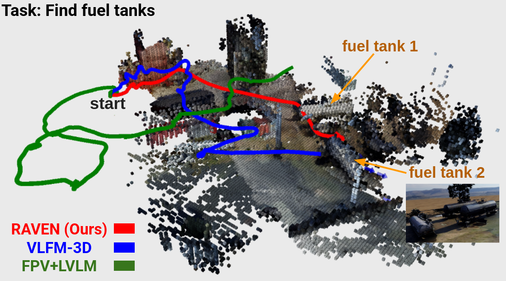
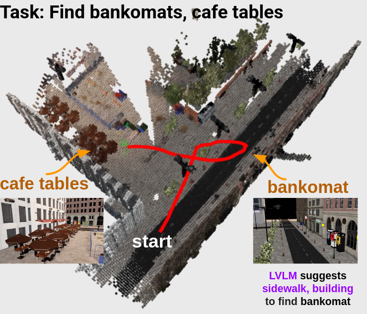

Aerial outdoor semantic navigation requires robots to explore large, unstructured environments to locate target objects. Recent advances in semantic navigation have demonstrated open-set object-goal navigation in indoor settings, but these methods remain limited by constrained spatial ranges and structured layouts, making them unsuitable for long-range outdoor search. While outdoor semantic navigation approaches exist, they either rely on reactive policies based on current observations, which tend to produce short-sighted behaviors, or precompute scene graphs offline for navigation, limiting adaptability to online deployment. We present RAVEN, a 3D memory-based, behavior tree framework for aerial semantic navigation in unstructured outdoor environments. It (1) uses a spatially consistent semantic voxel-ray map as persistent memory, enabling long-horizon planning and avoiding purely reactive behaviors, (2) combines short-range voxel search and long-range ray search to scale to large environments, (3) leverages a large vision-language model to suggest auxiliary cues, mitigating sparsity of outdoor targets. These components are coordinated by a behavior tree, which adaptively switches behaviors for robust operation. We evaluate RAVEN in 10 photorealistic outdoor simulation environments over 100 semantic tasks, encompassing single-object search, multi-class, multi-instance navigation and sequential task changes. Results show RAVEN outperforms baselines by 85.25% in simulation and demonstrate its real-world applicability through deployment on an aerial robot in outdoor field tests.
From image, depth, and pose inputs, the mapper builds an open-set 3D semantic voxel-ray map that serves as persistent memory. A behavior tree adapts the robot's actions: it performs semantic voxel-based search when reliable cues exist within depth range, switches to semantic ray-based search when only long-range directional hints are available, invokes an LVLM to suggest auxiliary objects when no target is visible, and defaults to frontier-based exploration if all strategies fail.
Semantic voxel-based search is prioritized first, as nearby objects within depth range provide the most reliable semantic cues.
Semantic ray-based search is used when voxel cues are insufficient. RAVEN uses semantic ray-based search when there are distant observations that can offer long-range coarse guidance.
When both semantic voxel and ray searches fail, RAVEN invokves LVLM guided search, which provides auxiliary object cues to find the targets.
Open-set semantic voxel-ray map serves as 3D memory, and it is task-agnostic; no predefined queries are needed during mapping, and the task can even change on the fly. When a new task arises, the robot can align the new query with the existing voxel-ray memory using a similarity score to select relevant voxels and rays. This enables our memory to support dynamic task-switching scenario during the mission. For example, when the first task ("radio tower") is given, it builds a memory that is agnostic to the second task. Upon introduction of the second task ("bridge"), it then queries the existing memory and uses highlighted cues to guide search, without rebuilding the map.
We designed 10 outdoor semantic navigation benchmarks comprising 100 semantic object-goal tasks using the Isaac Sim simulator, and evaluated our method and baselines on this benchmark.
The map-free FPV+LVLM relies only on recent FPV frames and LVLM prompts; without a consistent map it produces a reactive, meandering path, resulting in low efficiency. VLFM-3D benefits from a value map obtained by projecting similarity scores onto frontiers, which allows eventual goal finding; however, its motion remains myopic, repeatedly chasing the momentary maximum in the value map and yielding an unstable trajectory. In contrast, RAVEN activates semantic rays as soon as the fuel tank is briefly captured in an RGB image and travels nearly straight to the goal, producing a highly efficient path.
Starting with empty memory and failing voxel-ray search, the robot invokes LVLM, which suggests sidewalks and building as auxiliary cues for bankomats. Following rays pointing sidewalk, it finds the bankomats, turns back, spots and navigates to the cafe tables.
This work was supported by Defense Science and Technology Agency (DSTA) under Contract #DST000EC124000205. Omar Alama is partially funded by King Abdulaziz University. We thank Andrew Jong for his dedicated contributions to the development of the core autonomy stack.
@article{kim2025raven,
title={RAVEN: Resilient Aerial Navigation via Open-Set Semantic Memory and Behavior Adaptation},
author={Kim, Seungchan and Alama, Omar and Kurdydyk, Dmytro and Keller, John and Keetha, Nikhil and Wang, Wenshan and Bisk, Yonatan and Scherer, Sebastian},
journal={arXiv preprint arXiv:2509.23563},
year={2025}
}